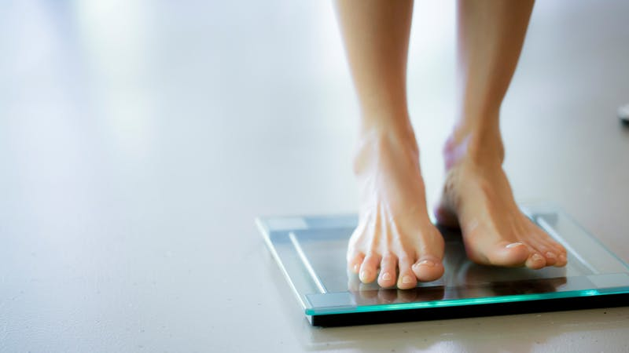

Home
 Read Articles from Experts:
Read Articles from Experts:
- Skin Care

- We all do a lot of things to stay young and look young but there is one thing we don’t do and that is protect our body and our skin from pollution. Have you ever wondered how much pollution can affect your skin? Probably not.
Effects of pollution on skin
Causes aging, wrinkles, pimples, black heads etc.
Rids all natural oils from your skin
Dust forms a layer over your skin and congests your pores.
Sun’s heat during noon is very harmful as ultra violet rays of the sun can cause cancer, rashes and diseases. Pollution can cause numerous skin diseases and rashes.
Pollution can make your skin look dull as it rids them off oxygen.
It makes your skin rough.
It gives you a tan, which does not go away so easily.
Read More...
- Healthy Eating
-
No matter what challenges your day brings in, it is hard to be in a good mood when you are feeling hungry or if your body is lacking essential nutrients.
Did you know that eating certain foods really help lift your spirits and keep your bad moods at bay? Yes, you read that right. A change in your diet can bring about changes in your brain structure, chemistry as well as physiology, which lead to changes in behaviour!
Read More...
- Weight loss

- Are you planning to lose weight? Or have you tried all ways to lose weight with Dier and Exercises? Or are you just seeking healthy food habits?
Read More...
Click here for more articles
Copyright 2019,eClinic.All Rights Reserved.